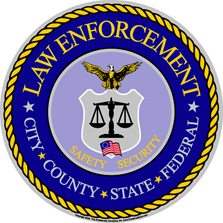

The Law Enforcement is a wide range where focus on building relationships amongst police officers, CIA, FBI and many mores. Feedbacks provide any concerns between each other as work can be done promptly.
We have surveyed departments where only 40% communicate amongst each other and recently after a year there has been a big improve in the work environment.
Training is our primary focus in this line of work because of technology change and they have to be up-to-date.

©PackJMT